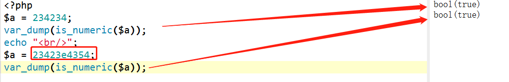

前段时间有个需求：将生产环境的部分数据转移到测试服务器进行测试。由于只需要导入特定账号的数据，我就想着将写个脚本，将数据组装成sql语句导出为sql文件，然后转移到测试服务器，导入到MySQL中。想象是美好的，过程是痛苦的，下面总结下几点。
1、脚本的思路就是：查询特定账号数据，组装拼接成sql文本数据。这里要注意，对查询的值要进行过滤处理，因为有些字段是包含一些非法字符，比如：’（单引号），”（双引号），`（键盘左上角第二个），这些符号在拼接sql语句时，会因为找不到闭合的另一端，让值变了，导致sql语句拼接有问题，所以这部分字符要替换掉，我是用str_replace()函数将这些符号置为空。
2、我是使用is_numeri函数判断值是否是数字类型结构，是的话就加""(双引号)，但是is_numeri有个问题，遇到有些数值有e字母的，它也是返回true,

实锤了这样是有问题的，因为这样值没加""是不能insert到MySQL中的，天坑。
后来我同时加上is_float(),is_string()函数同时来判断这个值是否需要加入双引号。
3、由于导出的数据量比较多，我是分了4个PHP进程来跑，一个进程跑一万个用户数据，这样能够节省很多时间。但是要注意的是，存储的sql文本也是需要进行区分的，因为多个进程同时写一个文本文件可能会出现数据丢失（我是后面才发现，花了好多时间补回去数据）。
4、使用tar -xcvf 命令对sql文件进行压缩打包，一个7G的文件，可以压缩到700多M，压缩效果还是不错的。
1、由于数据量比较大，我也是分了几个进程跑数据。使用的是MySQL source 命令来导入这些大的sql文件
mysql>source D:/www/sql/data.sql;
sql文件里面包含了use 数据库，这里就不需要use 数据库了。
通过source命令导入多个文件，可以新建一个sou.sql文件，里面存放下面的命令
例如：
source c:/1.sql;
source c:/2.sql;
这样就可以在一个source命令里面导入多个sql文件了。
期间也有一些问题：
出现：
mysql Got a packet bigger than 'max_allowed_packet' bytes
查了下，是因为单表数据量较大，大体定位到mysql会对单表数据量较大的SQL做限制
解决：
更改max_allowed_packet包大小
方案一，临时修改：输入命令 set global max_allowed_packet = 大小; （注意，这里的大小只能填写字节。重启mysql服务后，配置将会失效！）
方案二，修改my.ini文件，在[mysqld]部分加入 max_allowed_packet=大小
2、由于source命令这种方式不能记录定位记录到错误信息，所以后来我改用了linux shell方式导入
如下：sql.sh
#!/bin/bash
p="d:backup/sql.sql" //绝对路径
User='abc'
Password='123'
mysql -u $User -p$Password -e "source $f" 2>err1.txt;//输出错误到文件中，方便后面查询
echo 'OK!'
这样导入，可以找到一些错误的提示，方便后面解决问题。
最近一直忙数据的东西，发现在处理海量数据时，PHP的处理速度是可以了，主要瓶颈是在MySQL，开了几个进程跑数据，MySQL服务器就顶不住了。后面我们在优化时，可以往MySQL方面进行研究。
---------------------------------------------------END----------------------------------------------------
欢迎关注我的公众号【phper的进阶之路】
不断更新各种技术心得，免费提供各种学习资源！